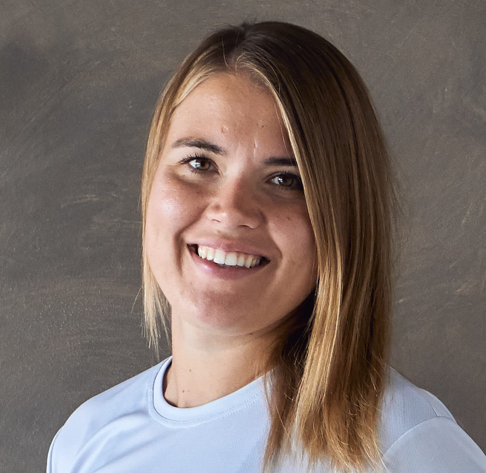
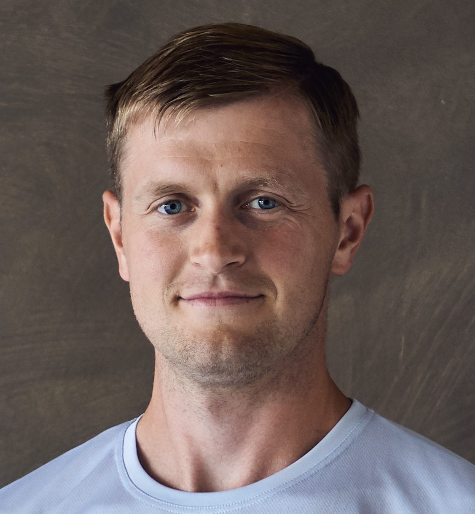

Oleme Tartu Ülikoolist võrsunud teadusmahukas ettevõte, kus tegutsevad spordi tausta ja hingega füsioterapeudid ja teised spetsialistid.
Meie eesmärk on tuua inimeste taastumisse ja treeningutesse teaduspõhine lähenemine, et aidata inimestel jõuda parima terviseni ja seeläbi saavutada oma seatud eesmärgid.
Pakume füsioteraapia, massaaži, nõelravi, teipimist ja sportlaste võimekuse testimist. Meie juures toimuvad ka rühmatreeningud füsioterapeutide juhendamisel ehk füsiotreeningud.

Mati Arend

Liisa Veerla
Rauno Kuusemets

Aira Ferschel

Margus Parts
Ott Meerits

Maarja Kalev


Veeriku spordikeskus, Näituse 33 II korrus (lahtiolek kokkuleppel)
+372 5664 5618 Kui me ei saa vastata, tegeleme klientidega. Võtame teiega esimesel võimalusel ühendust.
info@fysiocentrum.ee